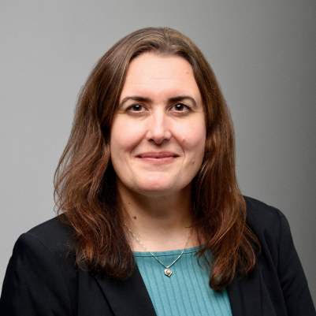
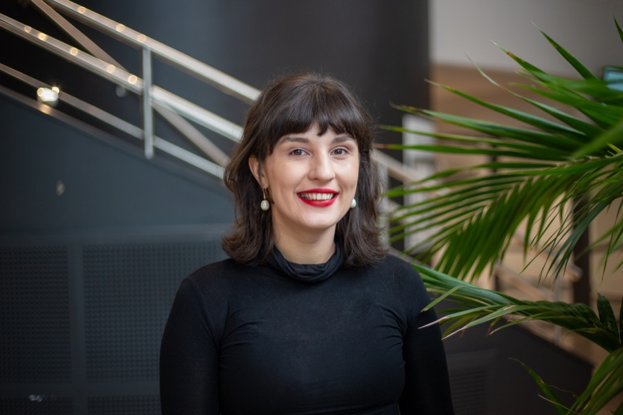
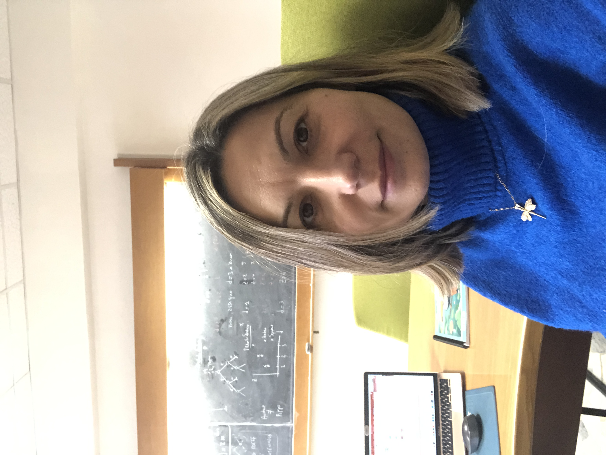
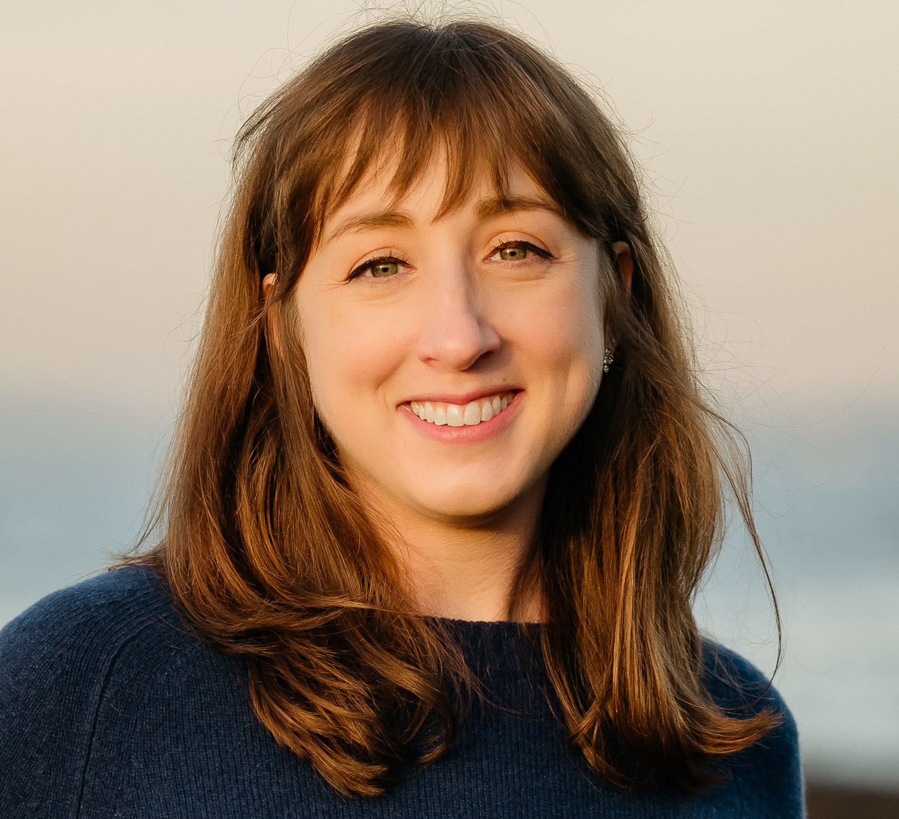
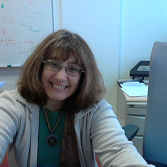
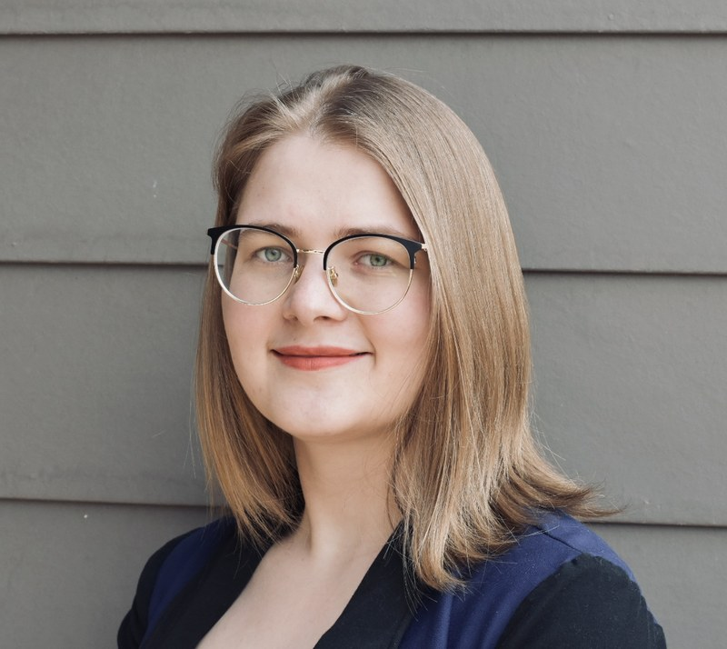
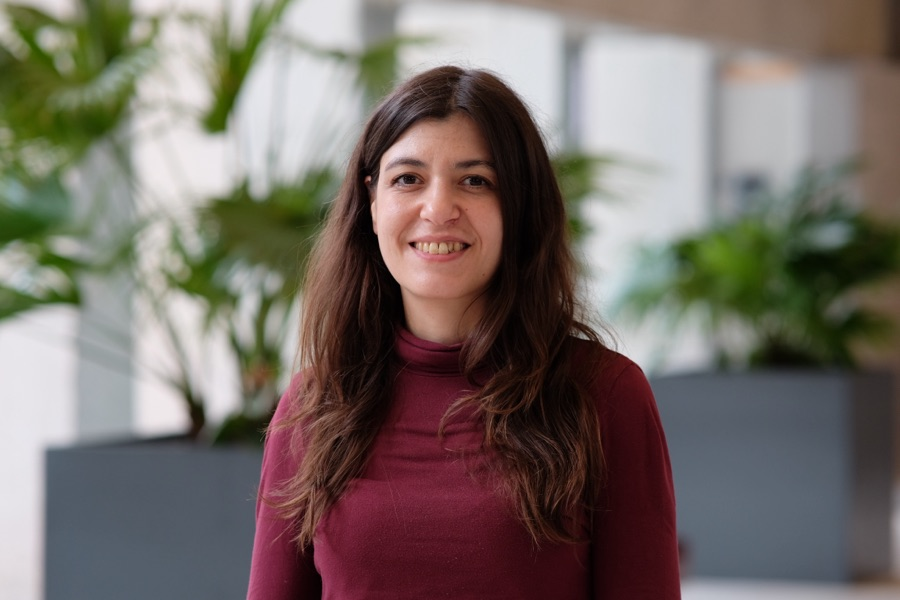
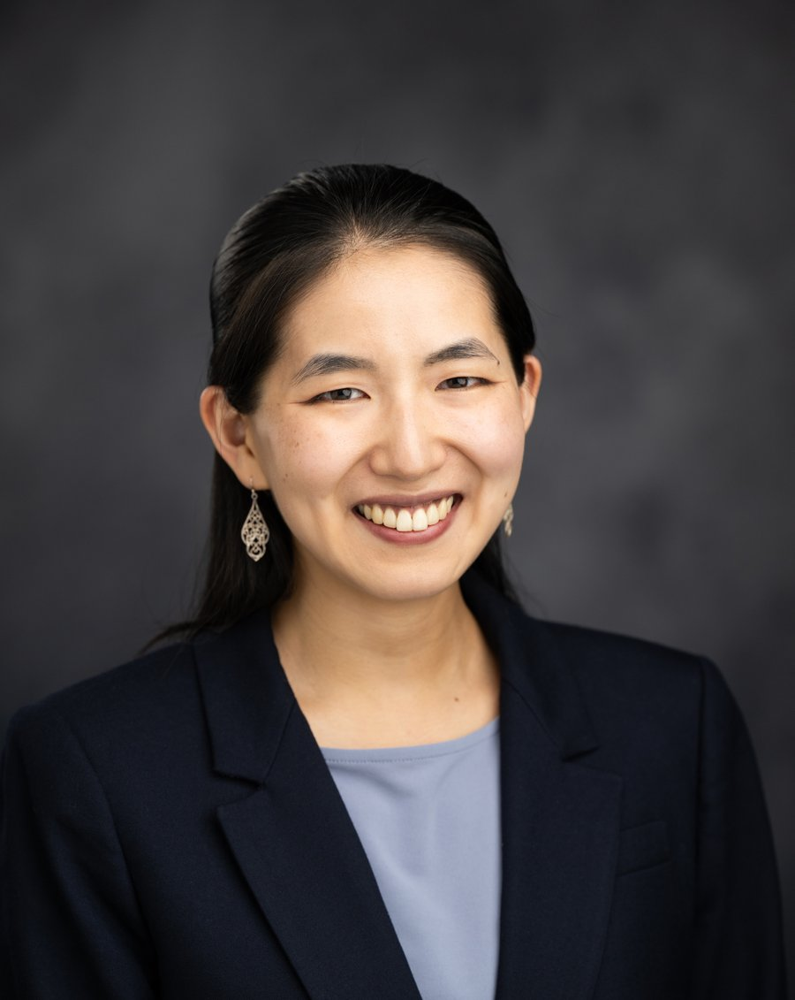

Sarah Muldoon
Invited Talk
Investigating individual differences in human brain networks
Connecting Communities in Complex Systems Science
Thursday, October 15th, 2026, 14:45 Eastern Time (18:45 UTC)
Lecture Hall 9, Binghamton University, and online
A satellite of CCS 2026, the Conference on Complex Systems
See the ProgramComplex systems science depends on exchange across disciplines and on the range of perspectives that different researchers bring to it. Women remain underrepresented across many of its subfields, from computational social science and network science to ecological modeling and statistical physics, and interdisciplinary researchers often fall between the support structures of established departments.
This satellite session brings together two community-building efforts, Womplexity (Women in Complexity) and the Complex Systems Society U.S. Northeast Chapter, to create a space where women researchers at every career stage can share their work, find mentorship, and build professional networks that reach across both disciplinary and geographic boundaries.
To offer a scientifically rigorous venue where women in complex systems present their research and receive feedback in a supportive, low-pressure setting, one where mentorship grows out of the format itself rather than depending on prior connections.
We prioritize diversity in career stage, from doctoral students to senior faculty, and in disciplinary background, so that attendees can see several viable paths through a complex systems career rather than a single model of success.
Representation of women in STEM has improved over recent decades, but progress remains uneven, and it is especially fragile in interdisciplinary areas like complex systems, where researchers often sit between the support structures of established departments. Policies on hiring and funding have been necessary without being sufficient on their own, and sustained networks at the community level help prevent the isolation that comes from working apart from peers who face similar challenges. Conferences are a natural place to turn scattered individual experiences into shared momentum.
The satellite runs as a half-day afternoon program built for both scientific depth and personal exchange. It opens with invited keynotes from established women whose career trajectories offer early-career scientists a practical roadmap as much as an inspiration, and short contributed talks give researchers from across the subfields of complex systems a venue to present their work.
A dedicated segment introduces the activities, projects, and plans of the CSS U.S. Northeast Chapter, a regional community that runs seminars, reading groups, and collaborations through the year and welcomes new members and collaborators. The program closes with a panel of women researchers and a moderator working in different corners of complex systems. It is organized around three guiding questions, asking how to build networks across institutions and countries, how to navigate non-linear career paths, and how communities like Womplexity and regional CSS chapters can best support researchers who are early in their careers or moving between fields. The panel is meant to be conversational rather than formal, with room for reflection, practical advice, and audience participation.
Half-day satellite session • Afternoon program • Thursday, October 15th, 2026
Invited Talk
Investigating individual differences in human brain networks
Contributed Talk (virtual)
When AI Reads the Heart: A Complexity-Based Trust but Verify Framework
Contributed Talk (virtual)
From Emergence to Chronicity: Lifepath Analysis of Long COVID Research Dynamics Across Six Pandemic Years
Contributed Talk (onsite)
Characterizing Adolescent Brain Structure After a Concussive Injury
Activities, projects, and how to get involved
Invited Talk
Nonlinear dynamics of beliefs and cascades over social networks
The session is hybrid and open to all registered CCS 2026 participants, in Lecture Hall 9 or online.
In person: Lecture Hall 9, Binghamton University, Thursday, October 15th, 2026, from 14:45 Eastern Time (18:45 UTC).
Online: through the private Zoom link sent to all CCS 2026 attendees.
Slides and sound: all talks are shared through Zoom, in the room and online, so everyone follows the same slides. If you join the Zoom from inside the room, keep your microphone muted, and your speaker volume at zero, to avoid audio feedback. Wi-Fi is available in all rooms.
Contributed talks: the call for abstracts closed on September 11, 2026. Thank you to everyone who submitted.

Dr. Sarah Muldoon is an Associate Professor in the AI and Society Department, Director of the PhD Program in Computational and Data-Enabled Sciences, affiliate of the Institute for Artificial Intelligence and Data Science, member of the Center for Cognitive Science, and member of the Neuroscience Program at the University at Buffalo, SUNY. Her research interests lie at the intersection of experiment and theory with a focus on applications of network theory to neuroscience data. She has spent extensive time working in experimental neurobiology labs and now runs a research group that couples theoretical advancement, computational modeling, and data-intensive analysis to study the relationship between structure and function in brain networks.

Anastasia Bizyaeva is an assistant professor in the Sibley School of Mechanical and Aerospace Engineering at Cornell University. Her research explores mathematical connections between collectively intelligent and adaptive behavior in biological and social systems, and the design of autonomous and artificially intelligent behaviors in engineered teams. Prior to joining Cornell she was a Postdoctoral Scholar with the AI Institute in Dynamic Systems at the University of Washington. She received her Ph.D. in Mechanical and Aerospace Engineering from Princeton University in 2022, and her B.A. in physics with a minor in mechanical engineering from the University of California, Berkeley in 2016. Her work has received several recognitions, including the 2025 George S. Axelby Outstanding Paper Award from IEEE Control Systems Society, the Princeton School of Engineering and Applied Science Award for Excellence, and the National Science Foundation Graduate Research Fellowship Award.

G. Cigdem Yalcin currently works at the Department of Physics, Istanbul University. Her research interests are in complexity science, network theory, nonlinear dynamics, and statistical physics of complex systems, including mathematical modelling of complex systems and interdisciplinary applications.

Amanda Perofsky is a Research Assistant Professor in the Department of Public Health and Health Sciences at Northeastern University's Bouvé College, with joint appointments in the Network Science Institute, Roux Institute, and Institute for Experiential AI. Trained as an ecologist and evolutionary biologist, she investigates how viral evolution, pathogen interactions, population immunity, and human behavior jointly shape infectious disease dynamics. Before joining Northeastern, she worked as a research scientist with the Seattle Flu Study at the University of Washington and completed a postdoctoral fellowship at the Fogarty International Center, U.S. National Institutes of Health; she earned her PhD in Integrative Biology from the University of Texas at Austin.

Laura Hernández is a physicist and associate professor (MCF-HDR) at LPTM UMR8089, CNRS and CY Cergy Paris University. Her research addresses complex systems through the interdisciplinary application of network theory, statistical physics, and dynamical systems theory. Her approach combines theoretical modelling with phenomenological studies of large-scale data, including data drawn from online social networks.

Ekaterina (Kath) Landgren is a Dean's Postdoctoral Fellow at the Stanford Doerr School of Sustainability, where she works with Sara Constantino and Madalina Vlasceanu. She was previously a Postdoctoral Visiting Fellow at the Cooperative Institute for Research in Environmental Sciences at the University of Colorado Boulder, working with Matt Burgess, and she holds a PhD in Applied Mathematics from Cornell University. She has used dynamical systems models to study phenomena ranging from voter turnout to planets beyond our solar system, and her current research brings these threads together around the social dimensions of climate change, asking how societies move toward large-scale responses to the climate crisis and how a person's position within a system shapes their view of it. Her broader interests span complex systems, open science, and interdisciplinary research.

Irene Ferri is currently a postdoctoral researcher at Northeastern University’s Roux Institute, where she works on human mobility data with applications in public health. She previously completed her Ph.D. in Condensed Matter Physics at the University of Barcelona's Institute of Complex Systems, with research focused on opinion modeling on complex and multilayer networks. Her doctoral work explored the dynamics of belief evolution within interconnected systems, aiming to understand collective behaviors emerging from individual interactions. Irene holds a Bachelor's degree in Physics and a Master's degree in Computational Modeling from the University of Barcelona. She has been actively involved in academic community roles, serving as Coordinator of the Complex Systems Society US-Northeast Chapter.

Mari Kawakatsu is an applied mathematician and a theoretical biologist at the University of Michigan, where she is an LSA Collegiate Fellow (2026–) and an incoming Assistant Professor (2027–) in the Department of Mathematics and the Center for the Study of Complex Systems. She uses mathematics and computation to study social processes in biological collectives and human societies, including reciprocity, communication, and prosocial decision making. Prior to joining Michigan, she was a James S. McDonnell Foundation Postdoctoral Fellow in the Department of Biology at the University of Pennsylvania.
For inquiries about the Womplexity Meets Northeast satellite session, please reach out to the organizers.
Chapter website: sites.google.com/binghamton.edu/css-usne
Follow the chapter
Women in Complexity: International network for career development and mentorship
Complex Systems Society U.S. Northeast Chapter: Regional events, seminars, and collaboration throughout the year